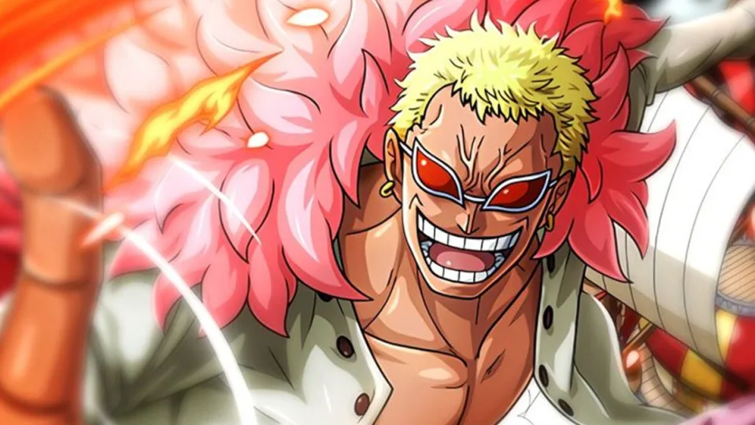

ONE PIECE
MARSHALL D. TEACH (BARBANEGRA)
Antagonista principal en la historia. Fue miembro de la tripulación de Barbanegra, pero luego se convirtió en el capitán de su propia tripulación, los Piratas de Barbanegra. Es uno de los Yonkou, los cuatro emperadores más poderosos del mar.
DONQUIXOTE DOFLAMINGO
Fue el principal antagonista durante el arco Dressrosa. Es un Shichibukai (Guerrero del Mar) que controla una gran parte del comercio subterráneo y la trata de esclavos.
SIR CROCODILE

Fue el principal antagonista durante el arco Alabasta. Es otro ex-Shichibukai que buscaba controlar el reino de Alabasta.
ROB LUCCI
Miembro de CP-0, la organización de inteligencia del Gobierno Mundial. Antagonista durante el arco Water 7 y Enies Lobby.
ENEL
Antagonista principal del arco Skypiea. Es el autoproclamado dios de Skypiea y posee el poder de la Fruta Goro Goro no Mi, que le otorga control sobre la electricidad.
AKAINU

Almirante de la Marina y uno de los tres almirantes principales. Fue el antagonista principal durante la Guerra en Marineford.
KAIDO
Uno de los Yonkou y conocido como "El Hombre más Fuerte del Mundo". Líder de los Piratas de las Bestias y tiene el deseo de comenzar la mayor guerra del mundo.
BIG MOM

Otro Yonkou y líder de los Piratas de Big Mom. Posee la capacidad de manipular las almas a través de su Fruta Soru Soru no Mi.
GECKO MORIA
Ex-Shichibukai y líder de los Piratas Thriller Bark. Utiliza su Fruta Kage Kage no Mi para manipular sombras y crear un ejército de zombies.
CAESAR CLOWN
Científico loco y antagonista principal durante el arco Punk Hazard. Fue miembro de los Piratas de Barbanegra y luego trabajó para los Piratas de Big Mom.
ARLONG
Capitán de los Piratas Arlong y antagonista principal durante el arco Arlong Park. Es un tiburón gyojin que buscaba establecer la supremacía de los gyojin sobre los humanos.
KIZARU

Almirante de la Marina conocido por su estilo relajado y su capacidad de moverse a la velocidad de la luz gracias a su Fruta Pika Pika no Mi. Participó en la Guerra en Marineford y en otros eventos cruciales en la historia de One Piece.
CHARLOTTE KATAKURI
Uno de los hijos de Big Mom y comandante de los Piratas de Big Mom. Katakuri es conocido por su habilidad de prever el futuro mediante la Fruta Mochi Mochi no Mi. Es un personaje extremadamente fuerte y respetado, y desempeñó un papel crucial durante el arco Whole Cake Island.